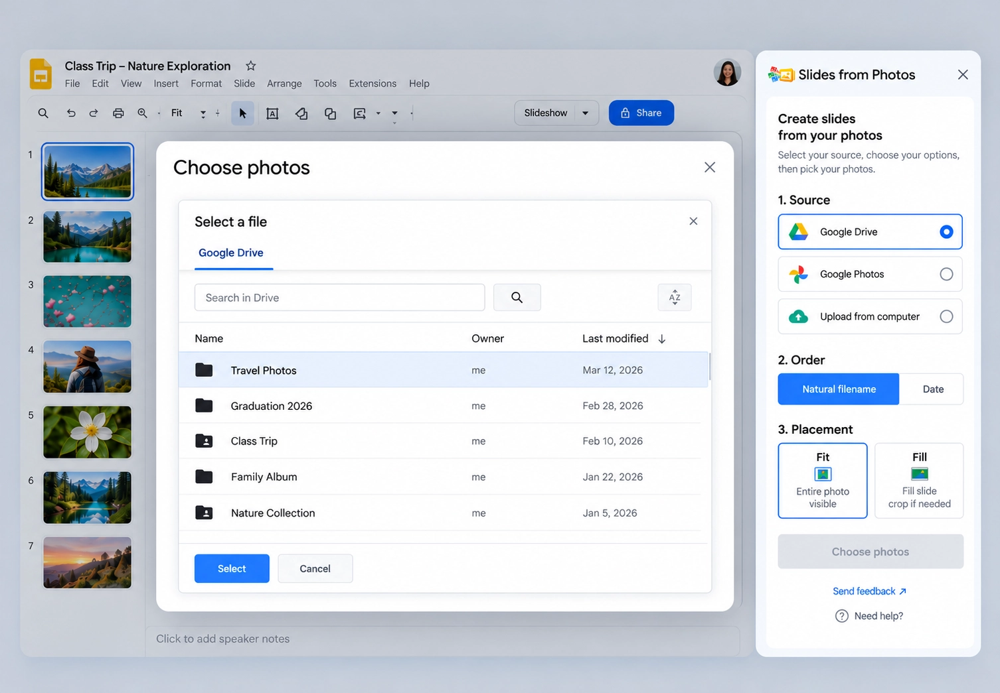
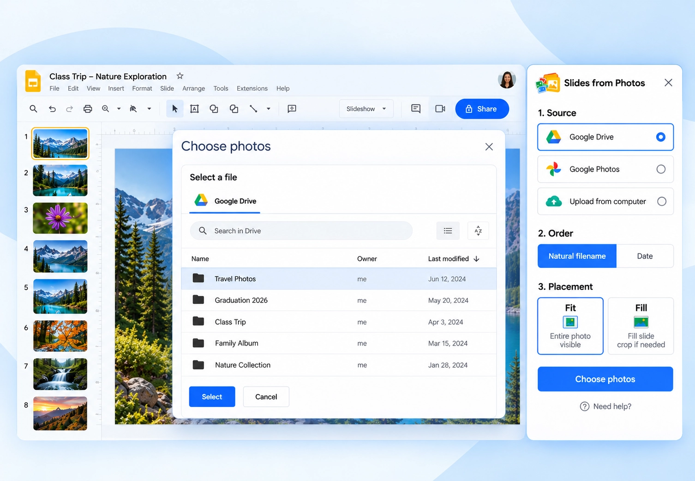
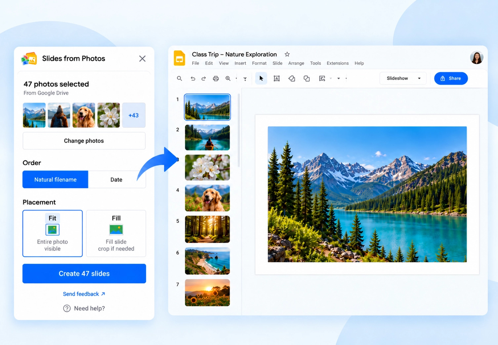

01
Select photos from Google Drive

Navigate to the Drive folder that contains your photos, then select the individual image files you want to use.
Slides from Photos guide
Have photos stored in a Google Drive folder? Slides from Photos helps you navigate to the folder, select the image files you want, review their order, and create a Google Slides presentation with one photo per slide.
Slides from Photos is a Google Slides add-on by DZS Labs for selecting Drive photos, reviewing their order, choosing Fit or Fill, and creating one slide per photo.

To create Google Slides from selected photos in Google Drive, open a presentation and launch Slides from Photos. Choose Google Drive, select the supported photos you want to use, review their order, choose Fit or Fill, and create the slides. The add-on creates one slide for each selected photo.
The current Drive flow accepts JPEG, PNG, and GIF image files.
01

Navigate to the Drive folder that contains your photos, then select the individual image files you want to use.
02

Review the selected photos and choose the order before creating slides.
03

Create one Google Slide for each selected photo and follow the batch progress.
No — not by selecting the folder itself. In the current Slides from Photos workflow, Google Drive folders are available for navigation, but the folder object is not selected as the batch input.
Navigate to the folder, select the individual supported image files you want, and process those selected files. The add-on does not automatically enumerate every file in a selected folder or recursively import nested folders.
Each selected Drive photo creates one editable Google Slide. You can configure the order before creation and choose Fit or Fill for placement.
For the broader workflow, see the general one-photo-per-slide Google Slides guide.

Progress is visible while the selected photo batch is processed. If processing is interrupted, supported jobs can resume, and the result reports completed, skipped, or failed items where applicable.

Google Drive stores and organizes the source image files. Google Slides is the presentation editor where the resulting slides are created.
Native Google Slides can insert images from Drive & Photos. Slides from Photos adds the batch workflow for selected photos: review the order, choose placement, and create one selected photo per slide.
Yes. Navigate to the folder in Google Drive, select the individual supported image files you want, then review the batch and create one slide per selected photo.
Yes. The current Drive picker supports selecting multiple supported image files.
No. The current workflow shows folders for navigation, but folder objects themselves are not selected. Choose the individual image files you want to use.
Yes. Slides from Photos creates one slide for each selected photo.
No. Supported photos can be selected directly from Google Drive through the add-on workflow.
Yes. The selected batch can be ordered before slide creation.
The current Drive workflow accepts JPEG, PNG, and GIF image files.
No. It does not recursively enumerate nested folders. Select the individual image files you want to use.
The batch result reports completed, skipped, and failed items so you can see what needs attention.
Select the Drive photos you want, review the batch, and create one slide per photo.
Install Slides from Photos